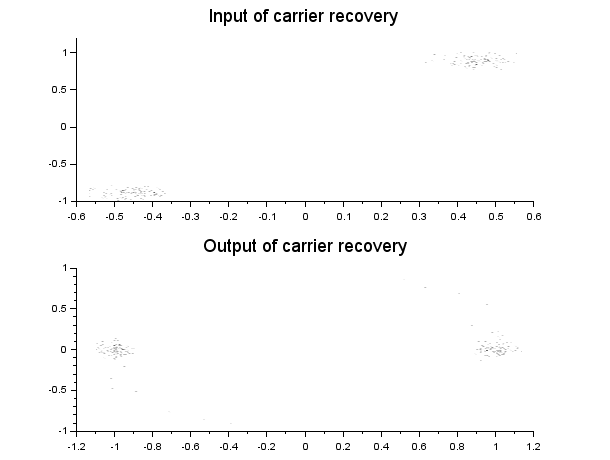

Description
Run a local oscillator tuned to the input signal through a phase error detector and a loop filter. The local oscillator is used to correct the phase and frequency of the input signal: , with current phase of the local oscillator.
Example
// Build a BPSK signal mod = mod_init('bpsk',fs=1,fi=0,fsymb=1); [mod,z1] = mod_process(mod,prbs(100)); // With some noise and phase offset z1 = awgn(z1, 0.05, 'c') .* exp(%i*0.7*%pi/2); // // Build a carrier recovery object ped = ped_init('psk', 2, tc = 10); // Default PED for BPSK lf = lf_init(1, tc = 10); // First order loop filter cr = carrier_rec_init(ped, lf); // // Proceed to carrier recovery [cr,z2] = carrier_rec_process(cr,z1); // scf(0); clf(); subplot(211); plot_const(z1); xtitle("Input of carrier recovery"); subplot(212); plot_const(z2); xtitle("Output of carrier recovery"); |  |  |

Example: BPSK signal with phase offset before and after carrier recovery.